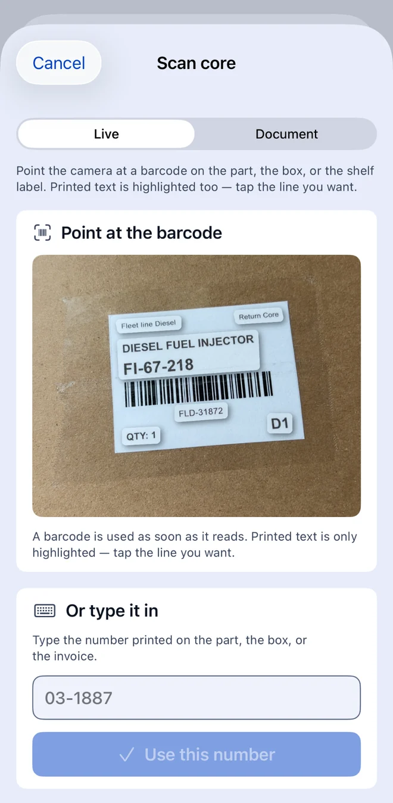
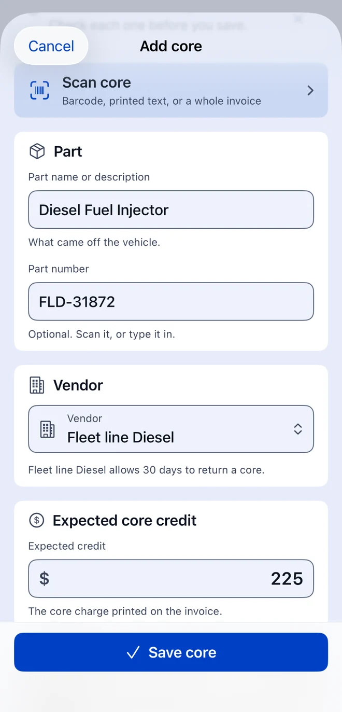
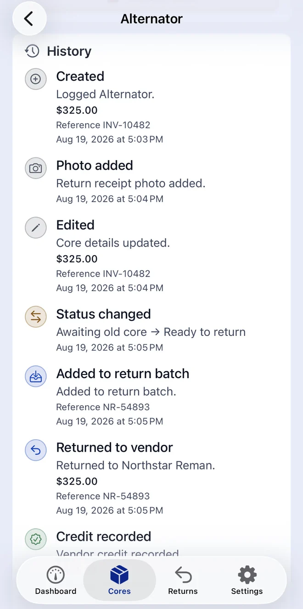

Scan the box, not the paperwork
Live mode reads barcodes and highlights printed text for you to tap. Document mode
flattens a whole invoice. Both run on device, and neither writes a record on its
own — everything lands as a suggestion you confirm.

Intake that takes seconds
Part, vendor, expected credit. References, bin, evidence photos and notes stay
folded away until you want them. The vendor's return window fills in the deadline.

A timeline you can hand to anyone
Every core keeps an append-only history: created, edited, photographed, status
changed, batched, returned, credited — each with its amount, its reference and its
timestamp. Nothing is rewritten after the fact.

Deadline reminders
Turn on notifications and CoreCredit tells you before a return window closes rather
than after. Off by default, and never required to use anything else.
Search and filter that keeps up
Find a core by part, part number, invoice, repair order, vendor or bin. Filter by
status when you want to see only what is overdue, only what is ready, or only what
is still in dispute.
Export, back up, move on
A spreadsheet for the office, a JSON backup for a new phone, a dispute packet for
the vendor. Restore reads a backup this app wrote and tells you exactly what it is
about to replace before it does it.